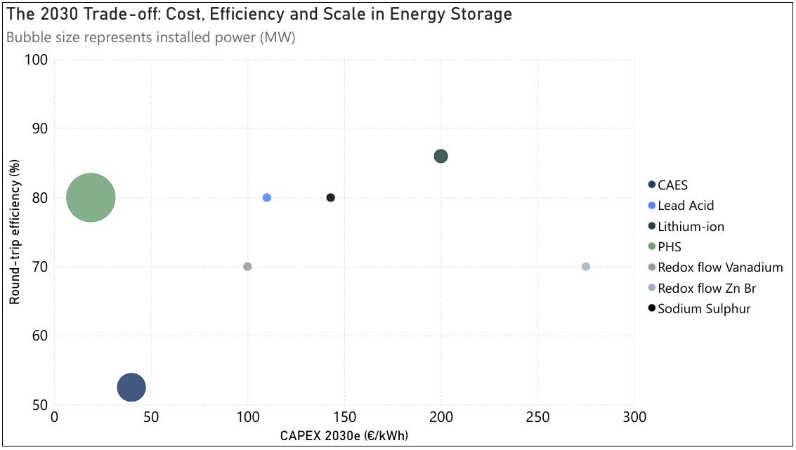
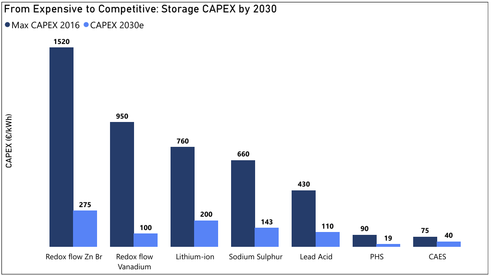

Analyzing storage technologies, capacity trends, and the economics shaping grid-scale energy systems.
As European power systems absorb increasing volumes of variable renewable generation, storage is no longer evaluated solely on technical performance. The decisive question is economic viability at scale. Understanding how different storage technologies combine installed capacity, efficiency, and cost evolution is essential to assessing their future role in the energy system.
When viewed together, the two datasets — one comparing installed power, efficiency, and projected CAPEX, and the other tracking CAPEX evolution from 2016 to 2030 — reveal a clear pattern: technologies that shape the system today are those where economics and scalability have already converged.

Data source: DOE Global Energy Storage Database
Pumped Hydro Storage (PHS) stands out as the structural anchor of large-scale storage. Its dominance in installed capacity is not just a legacy of historical investment, but the result of a robust economic profile. With CAPEX already low in 2016 and projected to fall further by 2030, PHS combines scale, longevity, and acceptable efficiency in a way few technologies can match.
This explains its continued relevance despite its geographic constraints. Where it can be deployed, PHS remains unmatched for bulk energy shifting and long-duration balancing. The cost trajectory confirms that its competitiveness is structural, not cyclical.
Compressed Air Energy Storage (CAES) follows a similar, though more nuanced, logic. Its projected CAPEX remains low relative to most battery technologies, reinforcing its potential for capacity-oriented applications. However, the limited improvement in efficiency over time highlights a key trade-off: CAES can deliver power at scale, but with higher energy losses. In systems increasingly shaped by efficiency and carbon considerations, this limits its universal applicability.

Data source: DOE Global Energy Storage Database
Lithium-ion storage tells the most dynamic story across both charts. In 2016, its investment costs placed it firmly in the "emerging" category. By 2030, projected CAPEX reductions dramatically change its positioning, bringing it closer to cost parity with more established technologies.
This cost compression explains why lithium-ion is rapidly expanding despite its comparatively modest installed capacity today. Its high round-trip efficiency and modularity make it uniquely suited for short-duration flexibility, congestion management, and market arbitrage. Rather than competing directly with PHS or CAES, lithium-ion complements them by addressing parts of the system where speed and responsiveness matter more than energy volume.
Redox flow batteries, sodium sulphur, and lead-acid systems illustrate the limits of cost reduction alone. While all show substantial CAPEX declines between 2016 and 2030, their absolute cost levels remain relatively high. Combined with moderate efficiencies and limited deployment, this constrains their role to specific use cases rather than system-wide solutions.
Their presence in the data is nevertheless important. These technologies highlight how diversification continues in the storage landscape, even if only a subset will achieve the scale required to materially influence system dynamics.
Taken together, the two graphs show that today's installed capacity is already aligned with long-term cost signals. Technologies that dominate the system are not those with the best single performance metric, but those where cost, efficiency, and scalability intersect.
This reinforces a critical insight for investors, system operators, and policymakers alike: storage deployment is increasingly driven by economic fit within the system, not by technological promise alone. As renewable penetration rises, the value of storage will depend less on headline efficiency and more on how well each technology integrates into a constrained, interconnected grid.
From a strategic standpoint, storage decisions must now be approached as system design choices rather than technology selections. Mature, low-cost solutions continue to anchor large-scale balancing, while rapidly declining battery costs unlock new layers of flexibility closer to demand and grid constraints.
The competitive edge will increasingly lie in combining technologies, durations, and locations to match system needs. In an energy system shaped by renewables, scale follows economics — but value is defined by system integration.
Let's discuss how data-driven analysis can support your strategy